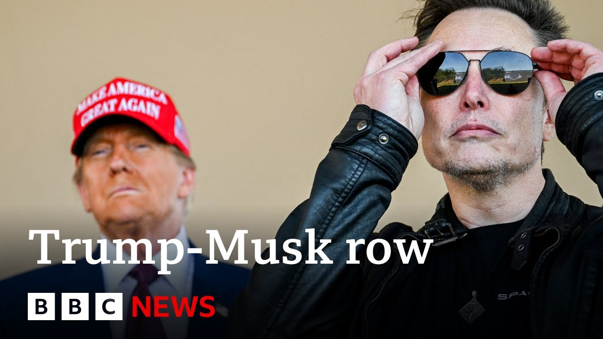

【美国总统特朗普“无意”与埃隆·马斯克和解 | BBC新闻】
Summary: The fallout between US President Donald Trump and Elon Musk escalates as Trump dismisses reconciliation, threatening Tesla's contracts and subsidies amid a public feud that has impacted Tesla's stock value.
摘要： 美国总统特朗普与埃隆·马斯克关系破裂升级，特朗普拒绝和解，并威胁取消特斯拉的政府合同与补贴，这场公开争执已影响特斯拉股价。

⏱️ Estimated Reading Time: 12 min
📚 六级生词 📚 雅思生词 📚 托福生词 📚 GRE生词 📚 视频里的生词
President Trump is moving on without his one-time adviser, Elon Musk, after the explosive fallout between the two men.
特朗普总统正继续前行，不再依靠曾经的顾问埃隆·马斯克，此前两人关系急剧恶化。
In a blitz of comments to US media, Mr. Trump says he isn't interested in making up with a tech billionaire in the wake of their extraordinary online feud.
特朗普在接受美国媒体采访时迅速表态，称在双方激烈的网络争执后，他无意与这位科技亿万富翁和解。
Mr. Musk was once an enthusiastic backer of the president.
马斯克曾是总统的热情支持者。
But in the past week, since leaving his job at the White House, he began voicing opposition to Mr. Trump's flagship budget bill, which is making its way through Congress.
但过去一周，自从离开白宫职位后，他开始公开反对特朗普提交国会审议的标志性预算案。
Mr. Trump now suggests he may cancel government contracts and subsidies with Elon Musk.
特朗普现在暗示可能取消与马斯克公司的政府合同和补贴。
News that wiped billions off the share price of his company Tesla.
这一消息导致特斯拉股价蒸发数十亿美元。
Our North America editor Sarah Smith reports.
本台北美编辑莎拉·史密斯报道。
This could be the internet's favorite breakup, spawning jokes and memes around the globe, pitting the world's richest man against arguably the world's most powerful.
这可能是互联网最热衷的分手事件，引发全球玩笑和梗图，让世界首富与 arguably 全球最具权势的人对立。
There were early signs that Musk might want to make up.
早期迹象显示马斯克可能希望和解。
When Trump supporting billionaire Bill Aman posted, "I support Donald Trump and Elon Musk and they should make peace for the benefit of our great country. We are much stronger together than apart."
当支持特朗普的亿万富翁比尔·阿曼发文称“我支持特朗普和马斯克，他们应为国家利益和解。团结比分裂更有力量”时，
Musk replied, "You're not wrong."
马斯克回复：“你说得没错。”
But is Donald Trump ready to forgive?
但特朗普准备好原谅了吗？
Forget it.
别想了。
The public battle seems to have paused.
公开争斗似乎暂停。
Leaving the White House for the weekend, Donald Trump had no comment.
周末离开白宫时，特朗普未予置评。
But he is still complaining about Musk in private, saying it's his drug taking that's making him crazy.
但他私下仍抱怨马斯克，称其吸毒导致行为疯狂。
We'll have the latest on the very public breakup between Elon.
我们将持续关注埃隆这场高度公开的决裂。
Earlier this morning, the president was on the phone to journalists making clear he does not want to talk to Musk.
今晨总统致电记者，明确表示不愿与马斯克对话。
Here's exactly what he said.
以下是他的原话。
Quote, I'm not even thinking about Elon.
“我根本没在想埃隆。
He's got a problem.
他有问题。
The poor guy's got a problem.
这可怜的家伙有问题。”
You call the president on his cell phone at 6:45, he picks up.
早上6:45拨打总统手机，他会接听。
Mr. Trump told ABC he's not interested in speaking to Musk, who he called a man who has lost his mind.
特朗普告诉ABC，他无意与“失去理智”的马斯克交谈。
Both men do have much to lose.
双方都面临重大损失。
When Donald Trump threatened to cancel government contracts worth billions with Musk's companies, he said he would decommission the only American space capsule that can reach the International Space Station before backing off.
特朗普威胁取消与马斯克公司价值数十亿美元的合同时，曾表示将停用唯一能抵达国际空间站的美国太空舱，后又让步。
It's the bulls having their final round of seeing who's going to be the boss.
这是两头公牛在决出谁才是首领。
It's a standard procedure for the last several thousand years among the leaders of countries.
这是几千年来国家领袖间的标准流程。
And um I it will fizzle out.
呃…最终会平息。
Remember this when Donald Trump turned the White House into a car showroom just to help out his mate?
还记得特朗普为帮朋友把白宫变成汽车展厅吗？
This is a different panel than I've had.
这次和我过去的团队不同。
Everything's computer.
现在全是电脑化。
Tesla sales had slumped since Musk had joined forces with him.
自马斯克与他合作后，特斯拉销量下滑。
The president even bought one himself, a car that he is now thinking of selling.
总统甚至自购一辆，现正考虑出售。
And that really would be a mean blow when the Tesla share price has already tanked thanks to this very public spat.
在公开争执已重创特斯拉股价之际，这将是又一打击。
The BBC's North America editor Sarah Smith reporting there.
BBC北美编辑莎拉·史密斯报道。
Well, Susanna Street, who is head of money and market says Har Greavves Landsdown, told me how this row with President Trump has affected Elon Musk in terms of Tesla's share price.
哈格里夫斯·兰斯当公司市场主管苏珊娜·斯特里特向我说明这场与特朗普的争执如何影响马斯克的特斯拉股价。
We do know that Tesla's valuation dropped by some $150 billion.
特斯拉市值已缩水约1500亿美元。
Uh that was after shares slid by around 14%.
股价下跌约14%后。
Now, they did make up a little bit of ground yesterday, but only 3%. though in no way returning to the former uh valuation.
昨日虽回升3%，但远未恢复原有估值。
So it's already costing Elon Musk and the worry is that actually given the depth of government contracts and subsidies that Tesla benefits from um a figure put at around 38 billion there could potentially uh be considerable uh pain to come.
马斯克已蒙受损失，更令人担忧的是特斯拉依赖约380亿美元的政府合同与补贴，未来可能承受更大冲击。
That's partly why this valuation has already dropped to to this extent, but it's not quite known exactly the full uh figure of uh uh the benefits that Tesla has uh from all these federal contracts.
这是市值暴跌的部分原因，但特斯拉从联邦合同中获利的总额尚不明确。
And the other thing to be aware of, of course, is that uh Space Link um is home SpaceX.
另一需注意点是SpaceX所属的星链。
Well, they've got presence in around a 100 countries and it could become embroiled in these kind of tariff negotiations.
其业务遍及约100国，可能卷入关税谈判。
I mean, Trump could demand countries not to do deals with Musk if this spat continues.
若争执持续，特朗普可能要求各国不与马斯克交易。
And in return, we know that the Trump presidency has a massive economic agenda.
而特朗普政府有庞大经济议程。
How could Elon Musk affect that?
马斯克如何影响该议程？
Well, he's already been highly critical of this big spending bill which is going through Congress.
他已强烈批评正在国会审议的大规模支出法案。
Donald Trump has called it a beautiful bill.
特朗普称其为“完美法案”。
Uh but as far as Elon Musk is concerned, he considers it be pretty ugly because he believes it's really going to add to the US uh deficit.
但马斯克认为该法案“极其糟糕”，因会加剧美国赤字。
And so there is this this this war of words which has erupted really mainly due to that because remember of course Musk was brought in to try and really trim or put a big dent into federal spending through the Department of Government Efficiency, the Doge Department.
这场口水战主要由此引发——别忘了马斯克当初是通过政府效率部（Doge部）来削减联邦支出的。
In fact, he only managed to trim um it by around 1%.
实际上他只削减了约1%。
Um so he left last week having not achieved those ambitions and then being highly critical of this spending bill, which Donald Trump has obviously reacted very strongly against.
他上周离职时未达目标，又严厉批评支出法案，引发特朗普强烈反应。
Both men are always happy to take on their opponents, but they're also known to change their minds.
二人都乐于挑战对手，但也以善变著称。
Do you think that the impact of any financial losses could force a compromise between them?
你认为财务损失会迫使他们妥协吗？
think it is very likely that this row will die down but there could still be repercussions ahead for Tesla given that it's already struggling in other areas.
争执很可能平息，但特斯拉在其他领域已面临困境，后续或受更多影响。
The head of its Optimus robot program has uh stepped down.
其Optimus机器人项目负责人已离职。
we don't think is directly affected but EV sales are slowing um and there is likelihood and already signs that Musk is making more reproach towards uh Donald Trump and then the markets expect that Donald Trump will also also uh back down there's this concept of the taco trade swirling Trump always chickens out we'll have to see what happens in this this case Susanna Street from Harris lands down there while Lucy Berisford is a relationship expert and psychotherapist.
虽不认为直接相关，但电动车销售放缓，且有迹象显示马斯克对特朗普更多指责，市场预期特朗普也会让步——存在“玉米卷交易”概念（特朗普总退缩）。我们将观察事态发展。哈里斯·兰斯当的苏珊娜·斯特里特报道。与此同时，关系专家兼心理治疗师露西·贝里斯福德分析称——
She has been assessing the public relationship between Donald Trump and Elon Musk and believes a fallout of some kind was inevitable.
她评估特朗普与马斯克的公开关系后，认为某种决裂不可避免。
I think what we've been recognizing is how similar they are and how they have been able to relate to each other.
我们发现二人极其相似，因此能相互理解。
They both had very difficult childhoods with extremely strong fathers.
童年都受强势父亲压制。
They in a way triumphed over their fathers by becoming very successful in their own right and in that sense they're both self-made men.
他们通过自身成功战胜了父亲，都是白手起家。
So I think they identified in each other each other's wounds.
因此他们能识别彼此的创伤。
They understood where they'd come from and that can form an incredibly strong psychological bond.
理解对方出身，形成极强心理纽带。
And so what you saw is two incredibly strong people really forging that alliance which is why people talked about it as a bromance.
所以两个强者结盟，被称作“兄弟情”。
But what people also said almost from the very beginning was that it was probably going to be very combustible and that people wouldn't be surprised if in fact it blew up.
但人们从一开始就预言这种关系易燃，最终爆发不足为奇。
And this of course is now what has happened.
如今预言成真。
So where did it go wrong?
那么关系如何破裂？
Where did the relationship break down do you think?
你认为转折点在哪？
Well, I think it was always destined to fail because those egos were so large.
我认为注定失败，因二人自我过于庞大。
you can only really have one big alpha male in the tribe and it was a question of who was going to be the survivor of that.
群体中只能有一个顶级阿尔法男性，问题是谁能胜出。
Now in straightforward political terms that is going to be Donald Trump because he is arguably one of the most powerful men on the planet as opposed to one of the most richest men on the planet.
从政治角度看，特朗普会赢——他是全球最具权势（而非最富有）的人之一。
But at the same time there is going to be a lot of tension.
但同时将伴随巨大紧张。
there's the fallout of this is probably going to have quite some, you know, ripples and repercussions.
此事余波可能产生广泛影响。
And I think the key thing to remember is that it might not be over.
关键要记住：争端可能尚未结束。
Just because they've had this one breakup doesn't necessarily mean that there might be some kind of reconciliation before there is another all a mighty row which will probably end the friendship for good.
一次决裂后可能和解，然后再次激烈争执，最终彻底终结友谊。
The thoughts of the relationship expert Lucy Berisford
关系专家露西·贝里斯福德的分析